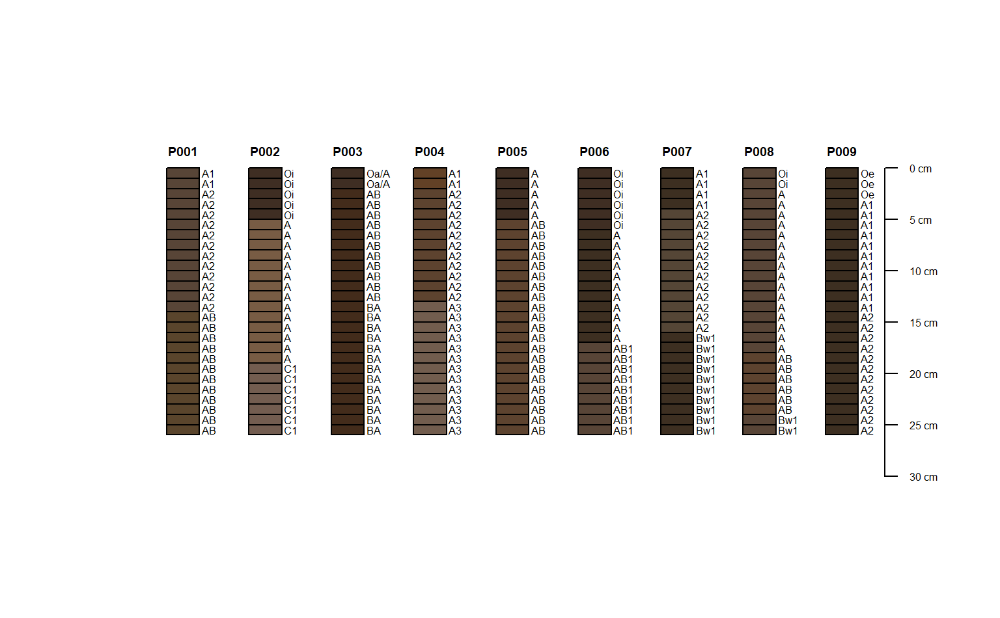
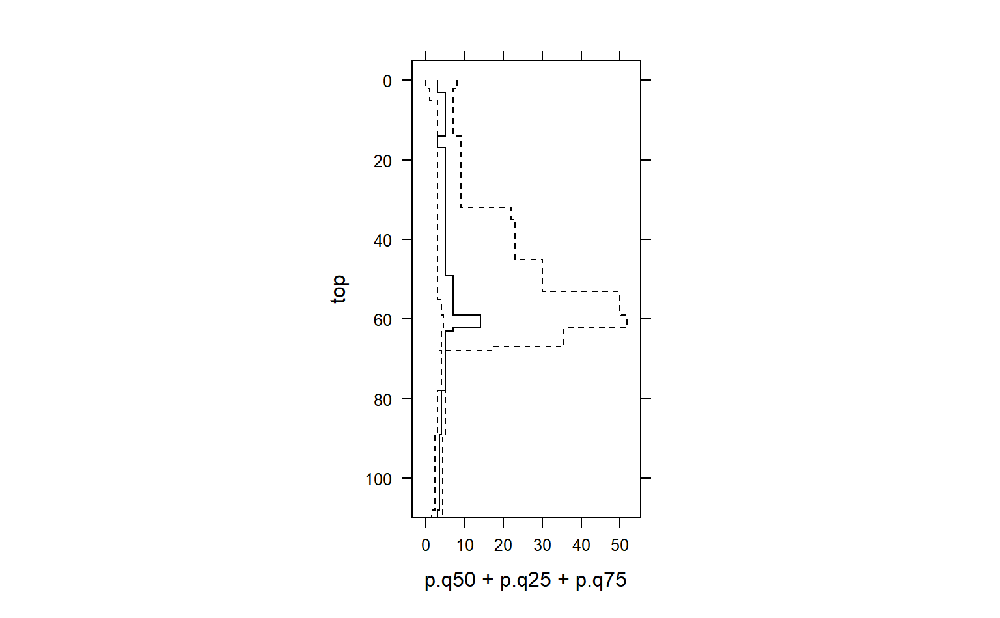

sp1.RdSoil profile data from Pinnacles National Monument, CA.
data(sp1)
A data frame with 60 observations on the following 21 variables.
groupa numeric vector
ida character vector
topa numeric vector
bottoma numeric vector
bound_distincta character vector
bound_topographya character vector
namea character vector
texturea character vector
propa numeric vector
structure_gradea character vector
structure_sizea character vector
structure_typea character vector
stickinessa character vector
plasticitya character vector
field_pha numeric vector
huea character vector
valuea numeric vector
chromaa numeric vector
http://casoilresource.lawr.ucdavis.edu/
data(sp1) # convert colors from Munsell to hex-encoded RGB sp1$soil_color <- with(sp1, munsell2rgb(hue, value, chroma)) # promote to SoilProfileCollection depths(sp1) <- id ~ top + bottom site(sp1) <- ~ group # re-sample each profile into 1 cm (thick) depth slices # for the variables 'prop', 'name', 'soil_color' # result is a SoilProfileCollection object s <- slice(sp1, 0:25 ~ prop + name + soil_color) # plot, note slices plot(s)# aggregate all profiles along 1 cm depth slices, # using data from column 'prop' s1 <- slab(sp1, fm= ~ prop) # check median & IQR library(lattice) xyplot(top ~ p.q50 + p.q25 + p.q75, data=s1, type='S', horizontal=TRUE, col=1, lty=c(1,2,2), panel=panel.superpose, ylim=c(110,-5), asp=2)